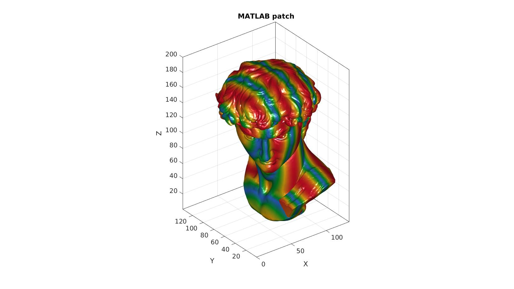

patch2obj
Below is a demonstration of the features of the patch2obj function
Contents
clear; close all; clc;
Syntax
patch2obj(objFileName,F,V); patch2obj(objFileName,F,V,C); patch2obj(objFileName,F,V,C,cMap); patch2obj(objFileName,F,V,C,cMap,cLim); patch2obj(objFileName,F,V,C,cMap,cLim,mtlStruct);
Description
This function exports the patch data defined by the faces (F), vertices (V) and the color data (C) to the OBJ (Wavefront .obj) format. The function generates a .obj file, a .mtl file, and a .jpg image file. The .obj file contains the geometry information and texture/color coordinates to use. The .mtl file contains the material information and refers to the image to use to look up the colors based on the texture coordinates in the .obj file. The color data C should ideally define either the vertex or face colors in the form of an nx1 array. If face colors are provided these are re-sampled (averaged) to vertex colors which is the required format for OBJ files. Colors are obtained from the input color map as well as the color limits. The input structure mtlStruct defines the MTL file components. With the default entries:
mtlStruct.Ka=[1 1 1]; %Ambient color mtlStruct.Kd=[1 1 1]; %Diffuse color mtlStruct.Ks=[0 0 0]; %Specular color, black=off mtlStruct.Ns=0; %Specular component [0-1000] mtlStruct.Ni=1.45; %Optical density/index of refraction mtlStruct.d=1; %"dissolved"/transparancy [0-1] mtlStruct.Tr=0; %1 - d, used instead of d by some software mtlStruct.illum=1; %Illumination model
Illumination models: 0. Color on and Ambient off 1. Color on and Ambient on 2. Highlight on 3. Reflection on and Ray trace on 4. Transparency: Glass on, Reflection: Ray trace on 5. Reflection: Fresnel on and Ray trace on 6. Transparency: Refraction on, Reflection: Fresnel off and Ray trace on 7. Transparency: Refraction on, Reflection: Fresnel on and Ray trace on 8. Reflection on and Ray trace off 9. Transparency: Glass on, Reflection: Ray trace off 10. Casts shadows onto invisible surfaces
For more information on the OBJ file format see: https://en.wikipedia.org/wiki/Wavefront_.obj_file http://paulbourke.net/dataformats/obj/minobj.html
EXAMPLES
clear; close all; clc;
Example 1: Export colored patch data to the OBJ format
%Define patch data testCase=1; switch testCase case 1 %David [F,V]=graphicsModels(9); t=V(:,1)-min(V(:,1)); t=t./max(t(:)); C=sin(2*t*2*pi); C=abs(C); cMap=gjet(250); %Define colormap case 2 [X,Y,Z]=peaks(25); [F,V,~]=grid2patch(X,Y,Z,Z); C=V(:,3); cMap=turbo(250); %Define colormap case 3 %Femur [F,V]=graphicsModels(5); C=V(:,1); cMap=turbo(250); %Define colormap case 4 [F,V]=stanford_bunny; C=V(:,1); cMap=viridis(250); %Define colormap end %Define file name gibbonFolder = fileparts(fileparts(mfilename('fullpath'))); savePath=fullfile(gibbonFolder,'data','OBJ'); fileName=fullfile(savePath,'test.obj');
Visualiza patch data
cFigure; hold on; title('MATLAB patch','FontSize',25); hp=gpatch(F,V,C,'none'); hp.FaceColor='interp'; axisGeom; colormap(cMap); camlight headlight; gdrawnow;
Export to obj
patch2obj(fileName,F,V,C,cMap);

GIBBON footer text
License: https://github.com/gibbonCode/GIBBON/blob/master/LICENSE
GIBBON: The Geometry and Image-based Bioengineering add-On. A toolbox for image segmentation, image-based modeling, meshing, and finite element analysis.
Copyright (C) 2006-2021 Kevin Mattheus Moerman and the GIBBON contributors
This program is free software: you can redistribute it and/or modify it under the terms of the GNU General Public License as published by the Free Software Foundation, either version 3 of the License, or (at your option) any later version.
This program is distributed in the hope that it will be useful, but WITHOUT ANY WARRANTY; without even the implied warranty of MERCHANTABILITY or FITNESS FOR A PARTICULAR PURPOSE. See the GNU General Public License for more details.
You should have received a copy of the GNU General Public License along with this program. If not, see http://www.gnu.org/licenses/.